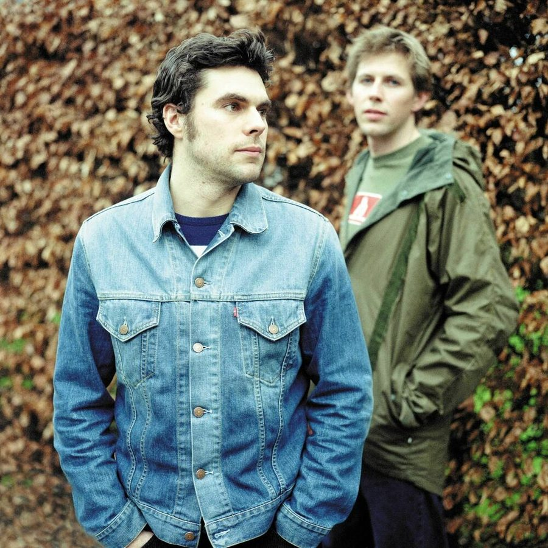

Groove Armada’s new era: “We’re happy being house DJs now”


You can look to London stalwarts Andy Cato and Tom Findlay AKA Groove Armada for an effective illustration of how mainstage dance music has transformed the past few years. For over a decade, Groove Armada were one of dance music’s marquee live acts alongside Faithless, Chemical Brothers and Underworld. Their string for the masterful, with their hugely diverse swathe of albums like Vertigo, Goodbye Country, Hello Nightclub and Love Box matched only by the formidable live musicianship that was shown by their touring band.
In the current climate of EDM though, it’s as if Groove Armada have effectively been transformed into an underground act again. It’s hard to imagine music as thoughtful as theirs played alongside the cheap thrills dominating the dance festival mainstages now. Tom Findlay revealed to Data Transmission this week that they could see the change coming in the summer of 2011.
“The tours had been very good,” he said, “but there had been a few festivals towards the end were the inevitable rise of EDM meant that the nature of mainstage dance music was changing. The kids weren’t really that fussed whether or not you had live instruments, it wasn’t really about that. It was about CO2 cannons and laser shows and all that kind of stuff.”
Groove Armada’s clever response was to go back to their DJ roots. They’ve just completed their most hyped yet season as residents at We Love… Space in Ibiza, and Data Transmission got Findlay on the phone just few short days after the spectacular closing party. Only just having arrived back from Ibiza, Findlay described the Groove Armada state of mind as “a bit tired and emotional,” with those mixed feelings that come from the spectacular closing parties, which also obviously represent the end of the Ibiza season, and the end of summer.
““It’s always quite a sad thing. But it’s been a really great summer on the terrace at We Love… Space this year. As good as I can remember it in a long time”.
They’ve got another hefty gig coming up this weekend that will see them, in Findlay’s words, “back in Shoreditch doing a warehouse gig for a thousand people”. They’ve also got their new Sweat EP due for release on Danse Club Records next week. To mark the occasions, Data Transmission finds out more about the new era of Groove Armada.
How long have you been playing at We Love… Space for now?
With one interrupted year when we went to Eden, which was a long time ago, it’s been 16 years. While we haven’t always necessarily been ‘residents’ as such, it’s been the Ibiza night we’ve always been involved with. The interesting thing is the same people involved now were actually involved back then, there’s this ‘extended family’ feel to the whole thing, it’s a bit special.
Perhaps there’s something a little more special about a Groove Armada DJ set nowadays too, now you’re not on the touring circuit anymore.
I think we’ve become better DJs because we’ve been able to spend more time on it. You think a little bit more about how you put yourself across, bringing a bit of our experience playing live into it in terms of how we control the sound, and the edits we do, we’re quite hands on in the way we do the gigs. It’s obviously what we’re doing now, and it means a lot to us to get it right, to try and keep that same intensity in our DJ performances that we had when we played live, definitely.
You were touring your last album Black Light up until the end of 2011. What was the main motivation to change things up, when the touring had been successful for so long?
There were a number of reasons. Partly we felt at that point we were playing as a band as long as we could remember, and we wanted to go out with a real sense we were at the top of our game. And I think in that last year of touring we should have been headlining the smaller stages, rather than playing the dance festival mainstages. With the benefit of hindsight, we would have done that differently. The gigs that were really great were playing the John Peel stage at Glastonbury, that really worked, or our shows at the Brixton Academy. When it didn’t work was when we were headlining European dance festivals when Laidback Luke would come on after us. No disrespect to him, but that was what we felt was around us at that time. It was more about volume and spectacle, and less about interesting musicianship or anything like that.
So I guess you saw all those changes coming.
You’ve just got to be realistic about it. You’ve gotta either radically change your style and the way you put your gig across, and just go for that because you see it coming. Otherwise, you go for a complete change in direction. I don’t think either of us wanted to start writing consciously commercial dance stuff for the band to perform, we didn’t think that was necessarily fair.
Was it ever considered?
Not really. I think we were really proud of the last record we made, and proud of the songwriting at the heart of that. And we did our best, we would always do our best to take a song and adapt it as effectively as possible for a live environment. You’re conscious of the fact that when you go up on a stage, you need to amplify everything, make the drops clearer… But we didn’t think we could change the fundamental nature of the music we wanted to write. So what we did was move onto something completely different, just making house records and DJing, and adding a little bit to that show where we have our own visual setup, controlling the lighting and lasers. But I don’t think we could have ‘reimagined’ the songwriting behind the band to that extent.
You’ve just gotta make a decision about the kind of life you want to lead. I feel really natural sitting down and writing house records now, I like doing it. And I like the scaled-back approach of playing DJ sets. We had some really great live experiences, but I don’t think they necessarily get better the longer you do them. So we had an amazing time with that, but now we’re doing warehouse parties, and focusing on being residents at We Love… Space and that’s really fun. We’re lucky to come around to a moment were we’ve decided to become a little more rootsy.
So the fact you’ve gone back to being DJs, would you say that represents you embracing your house music roots to a degree?
You’re inevitably a product of your time. I think if we kept trying to keep that high-energy thing going, to keep that big tour machine going… Where we are now, making house music from time to time and taking life a little it easier. It’s pretty cool actually and I’m quite enjoying it.
So what’s exciting you guys in house music at the moment?
There are some really good labels, a lot of really good UK house music at the moment that I’m loving. I’ve got a huge amount of respect for acts like Dusky and George Fitzgerald, it’s house music that is quite musical, but also still pretty visceral. Labels like Aus Music are really inspiring me to write music at the moment. I used to find it really hard to find music that I was excited about playing, but at the moment I’m feeling overwhelmed by the amount of good music.
Are we going to see another Groove Armada album at some stage?
I think at the moment, the change that we’ve gone through from being this kind of stadium-ish, charting act, to where we are now, you can’t change those perceptions overnight. It’s only really been two years since we stopped doing that, and we’re feeling now people are gradually getting their heads around us being house DJs and playing clubs a little bit more. So I think we’ll keep doing this for a while, and then there will be a desire at some point to try and write an album. And then we might see if there’s any interest in people seeing the band play live again in a couple of years time. I think for every new career phase, you need to give it time to breathe and develop. I think if we just went back to writing an album and touring it, it would be a bit self-defeating.
The band has had such a creative 15 years, you must be happy to take a break.
The band has been going for about 20 years now, we’ve been on a bit of a treadmill, so I’m really enjoying the space and opportunity to do other things, and be a bit less musically obsessed. 20 years is a long time in show business. When you’re in that cycle, of writing an album, rehearsing it and then taking it on the road, you never have a chance to appreciate what’s around you, and what other people are doing. I’ve been able to rediscover a love of music, really. Quite broad, and not necessarily just house music. But that’s been a nice thing, to worry a little less about yourself, just sit back and listen, and remember why you love music in the first place. You don’t get the chance to do that when you’re obsessed with your own stuff.
Looking back on the body of work you’ve done as Groove Armada, you’ve had some really great albums, but what’s even more impressive is although you’ve come from a house music background, they’ve all been so diverse. Your last album Black Light was such a creative U-turn.
I’m really proud of that record, it was the one that was hardest to make in a lot of ways. We put in a lot of physical and emotional effort to get to that point, but we were proud of it. There’s been a lot of diversity on all of our records. But I’m kind of enjoying the way that house music is making me focus a little. Some of those early albums, as much as I love them, they are fairly mad, they do jump from one place to another. So I’m enjoying being a little more locked down.
Sometimes, it was like you were trying to write anything but straightforward house music, it was like you were running away from it.
I don’t think that was necessarily a conscious thing. We were just discovering a lot of new things in music, and we couldn’t quite settle on a style we loved. So we just went with our moods a little, and that sort of varied from day to day. Now that we’re living in different countries and working separately, the music ends up sounding a little more homogenous than when we were working together. For some reason that I don’t quite understand!
Andy Cato had his solo album Times and Places come out this year, which ended up being a very, very good album.
He’s always had a love of that Balearic sound, and it’s a really lovely piece of music, it’s got a real sense of a flow to it. I think it’s something that he’s just had up his sleeve; I’ve heard a million different versions of those songs over the years, so it’s great to hear it all pulled together in a collection like that. He’s one of those kind of people that when he gets on a roll, he can’t quite ever stop working, so that’s a product of all those years touring.
Tickets are available below
To buy tickets for this event please visit the events page: LWE presents Danse Club: Sweat party tickets from Skiddle.
These tickets are on sale for LWE presents Danse Club: Sweat party . Skiddle.com is an official ticket outlet for this event. All credit card purchases you make at Skiddle.com are encrypted through our Secure Server Technology
]]>